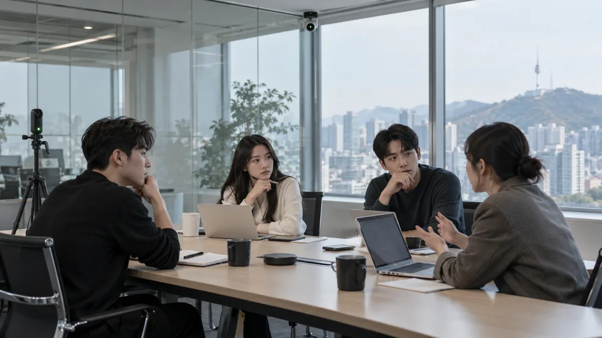
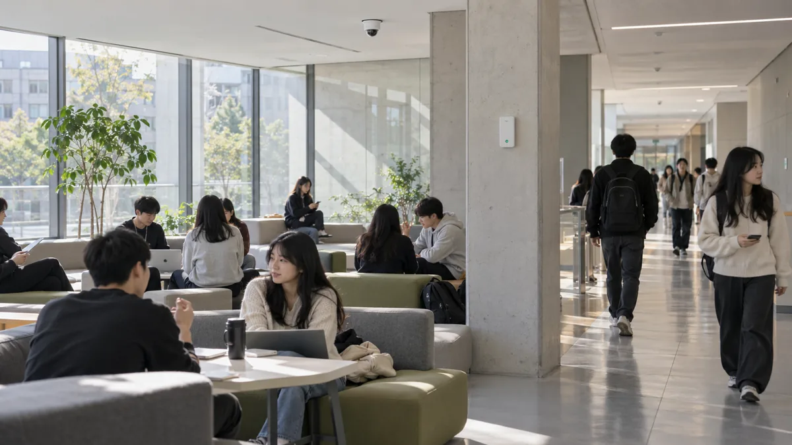
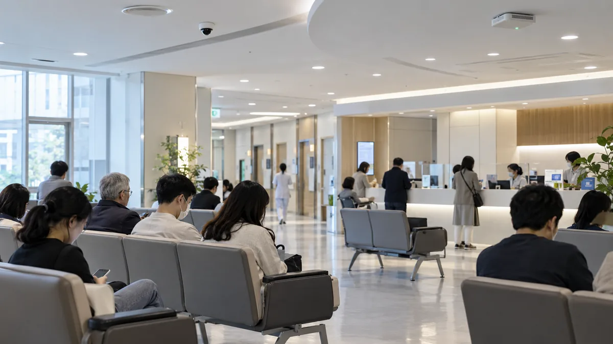
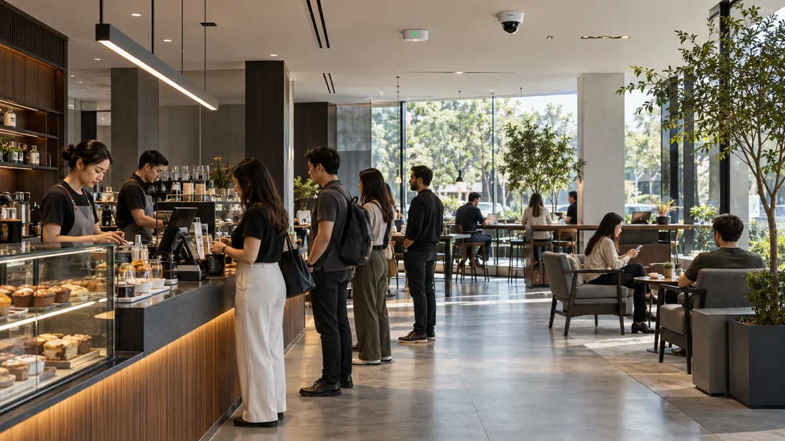

미션
ABOUT / SAI STUDIO
사람 사이에서 일어나는
보이지 않는 신호를
발견합니다.
SAI STUDIO는 사회적 긴장과 상호작용의 패턴을 연구하고, 그 결과를 기술과 서비스로 전환하는 인간 상호작용 연구기업입니다.
우리의 방향 보기 ↓이름의 의미
SAI STUDIO
SAI STUDIO 이름의 의미
사이
사람과 사람, 감정과 행동 사이에 존재하는 거리
현상
그 거리 안에서 반복되는 침묵과 긴장, 시선과 움직임
스튜디오
관찰과 측정을 실제 공간의 변화로 구현하는 실행 조직
미션과 비전
우리가 존재하는 이유
사람 사이의 보이지 않는 긴장을 발견하고,
더 자연스러운 상호작용의 기준을 만듭니다.
비전
사람과 공간, 기술이 더 자연스럽게 연결되는 사회를 만듭니다.
연구를 실제 행동과 환경의 변화로 연결해 더 나은 상호작용의 기준을 제시합니다.핵심 역할
연구에서 변화까지
우리는 세 가지 역할을
하나의 체계로 연결합니다.
현상을 발견하는
연구기관
일상에서 반복되지만 쉽게 설명되지 않았던 사회적 긴장과 행동 패턴을 관찰합니다.
감각을 측정하는
기술기업
거리, 침묵, 시선과 대화 타이밍을 데이터로 바꾸고 AIS와 SRS로 분석합니다.
변화를 설계하는
파트너
연구 결과를 기업, 학교, 기관의 공간과 서비스에 적용해 더 나은 상호작용을 만듭니다.
관찰
판단하기 전에 있는 그대로 기록합니다.
측정
감각으로 느끼던 현상을 데이터로 바꿉니다.
이해
어색함을 관계가 보내는 신호로 해석합니다.
개선
연구를 실제 행동과 환경의 변화로 연결합니다.
연혁
스튜디오의 성장
관찰에서 시작한 질문을
기술과 프로젝트로 확장해왔습니다.
SAI STUDIO 설립
인간 상호작용과 사회적 긴장에 대한 기초 연구를 시작했습니다.
AIS 1.0 개발과 첫 현장 연구
행동 신호를 어색함 지수로 전환하는 분석 체계를 구축했습니다.
SRS 행동 예측 모델 구축
행동 대안별 변화를 예측하는 시뮬레이션 시스템을 개발했습니다.
AIS 2.0 공개
복합 맥락 분석과 공간 행동 데이터를 결합한 새로운 모델을 공개했습니다.
대학·기업 공동 연구 확대
연구 결과를 캠퍼스, 업무 공간, 서비스 환경에 적용하고 있습니다.
사람 사이의 현상을 연구합니다.
SAI STUDIO메인으로 돌아가기 →FIELD APPLICATIONS
기존 공간 적용 기록
01대화가 시작되지 않는 회의실

CORPORATE / OFFICE
함께 일하지만 대화가 자연스럽게 시작되지 않는 공간의 침묵, 시선과 공기 흐름을 측정합니다.
- SILENCE
- 12.4 sec
- GAZE AVOIDANCE
- 64%
- CO₂
- 860 ppm
대화 시작 +24%
IRU-01 / AIR-03 / PDS-01
기존 공간 적용 예시의 기록값이며 실시간 센서 수치가 아닙니다.
02인사 타이밍이 어긋나는 캠퍼스

SCHOOL / CAMPUS
복도와 라운지에서 반복되는 시선 회피, 이동 동선 충돌과 관계 거리 판단의 어려움을 분석합니다.
- PATH CONFLICT
- 38%
- GAZE EVENT
- 2.8/min
- DWELL TIME
- 06.7 sec
동선 충돌 -31%
IRU-01 / LGT-01 / PDS-01
기존 공간 적용 예시의 기록값이며 실시간 센서 수치가 아닙니다.
03기다림이 긴장으로 바뀌는 대기실

HOSPITAL / WAITING
환자와 보호자가 함께 머무는 시간의 호흡 변화, 공기 정체와 침묵 압박을 진단합니다.
- BREATH VAR.
- +32%
- AIR FLOW
- LOW
- WAIT TIME
- 18.6 min
긴장 지수 -28%
BR-02 / AIR-03 / CALM-01
기존 공간 적용 예시의 기록값이며 실시간 센서 수치가 아닙니다.
04머무르지만 연결되지 않는 서비스 공간

RETAIL / SERVICE
카페와 고객 라운지의 거리, 소음과 침묵의 불균형을 측정해 자연스러운 체류 환경을 설계합니다.
- PERSONAL SPACE
- 1.42 m
- NOISE BALANCE
- 62 dB
- STAY TIME
- 24 min
평균 체류 +18%
CALM-01 / LGT-01 / PDS-01
기존 공간 적용 예시의 기록값이며 실시간 센서 수치가 아닙니다.